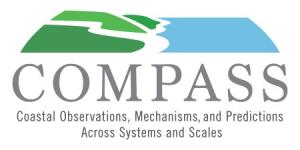

About COMPASS
The COMPASS project is funded by DOE’s Environmental System Science Program and aims to improve fundamental scientific understanding, model representation, and predictive capacity of coastal systems.
COMPASS presentations at AGU2026
Monday
NS13A-04 Linking electrical signals to soil hydraulic properties and biogeochemical state changes across coastal interfaces
14:54 - 15:06
2018 - West (MC)
Efemena Destiny Emmanuel, University of Toledo
Tuesday
H21A-08 Salinity and Hydrology Jointly Control Biogeochemistry Across Coastal Terrestrial-Aquatic Transects in a Coupled Land Surface-Reactive Transport Model (Invited)
09:47 - 09:58
3006 - West (MC)
Benjamin N Sulman, Oak Ridge National Laboratory
Wednesday
B34B-06 Stem moisture controls on upland tree methane and nitrous oxide fluxes observed during a four day flood experiment
17:12 - 17:23
3011 - West (MC)
Nicholas Ward, Pacific Northwest National Laboratory
NS34A-07 Continuous geophysical imaging for linking subsurface hydrology, redox dynamics and tree water use in a coastal forest critical zone
17:15 - 17:25
2018 - West (MC)
Kennedy O Doro, University of Toledo
Thursday
B41G-2024 Going with the flow: Microbial redistribution during storms
08:30 - 12:00
South - Poster Hall (Hall ABC) (MC)
Pamela Weisenhorn, Argonne National Laboratory
B41Q-2298 Assessing Soil GHG Measurement Protocols for Robustness, Efficiency, and Bias
08:30 - 12:00
South - Poster Hall (Hall ABC) (MC)
Ben P Bond-Lamberty, Pacific Northwest National Laboratory
B41Q-2314 Saltwater flooding increases soil anoxia by altering soil structure
08:30 - 12:00
South - Poster Hall (Hall ABC) (MC)
Kenton Alan Rod, Pacific Northwest National Laboratory
B41Q-2316 Saltwater Intrusion and Sea Level Rise Consistently Suppress Decomposition but have Variable Impacts on Soil Carbon Stocks
08:30 - 12:00
South - Poster Hall (Hall ABC) (MC)
Spencer Rhea, Duke University
B41Q-2324 Standardized Coastal Data for Predictive TAI Understanding: The EXCHANGE Framework
08:30 - 12:00
South - Poster Hall (Hall ABC) (MC)
Kaizad F. Patel, Pacific Northwest National Laboratory
B41Q-2326 Structural Iron (Fe) in Clay Minerals Represents a Major Fraction of the Fe Pool in Coastal Wetland Soils in the Great Lakes and Mid-Atlantic Regions
08:30 - 12:00
South - Poster Hall (Hall ABC) (MC)
Edward J O’Loughlin, Argonne National Laboratory
B41B-02 Wetland lateral transport along a marsh salinity gradient: impacts of biogeochemistry exceed salinity
08:40 - 08:50
3011 - West (MC)
Stephanie J Wilson, Smithsonian Environmental Research Center
OS42B-02 Reconstruction of nearshore water surface elevation with SWOT to force a land surface model
10:50 - 11:00
2004 - West (MC)
Etienne Fluet-Chouinard, Pacific Northwest National Laboratory
B43E-04 Does Repeated Coastal Flooding Reshape Ecosystem Biogeochemistry?
14:47 - 14:57
3014 - West (MC)
Jianqiu Zheng, Pacific Northwest National Laboratory
Friday
B51F-1700 From Flood to Flux: Stem Greenhouse Gas Responses of Coastal Trees to Flooding
08:30 - 12:00
South - Poster Hall (Hall ABC) (MC)
Julianna Mullen, Ursinus College
B51L-1856 Tree mortality mechanisms in coastal forests under saltwater exposure
08:30 - 12:00 South - Poster Hall (Hall ABC) (MC)
Yanjun Song, Smithsonian Environmental Research Center
B51E-01 Using Micron-Scale Synchrotron X-ray Computed Tomography to Link Soil Pore Structure to Field-Scale Biogeochemical Processes (Invited)
08:30 - 08:40 3009 - West (MC)
James O’Sullivan, Argonne National Laboratory
B51B-02 Using Soil Respiration Observations to Inform Mechanistic Modeling of the Global Carbon Cycle
08:49 - 09:07
3012 - West (MC)
Ben P Bond-Lamberty, Pacific Northwest National Laboratory